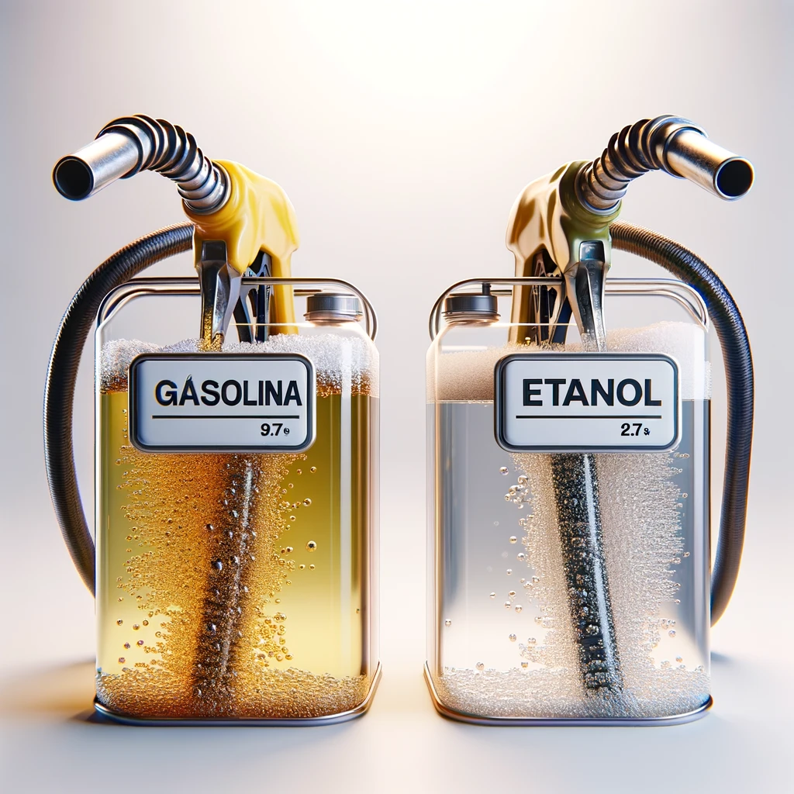

Os valores de eficiência de 7 km/l para etanol e 10 km/l para gasolina foram predefinidos com base em dados de carros populares no Brasil. Estes valores médios oferecem uma base precisa para determinar a opção de combustível mais econômica.
Dados Usados para Determinar a Eficiência Média (km/l)
| Carro | Eficiência com Etanol (km/l) | Eficiência com Gasolina (km/l) |
|---|---|---|
| Volkswagen Gol | 6.5 - 7.5 | 9 - 10 |
| Fiat Argo | 7.0 - 8.0 | 9.5 - 11 |
| Chevrolet Onix | 6.5 - 7.5 | 9.0 - 10.5 |